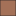

<!doctype html>
<html lang="en">
    <head>
        <meta charset="utf-8">
        <meta http-equiv="X-UA-Compatible" content="IE=edge">
        <meta name="viewport" content="initial-scale=1,user-scalable=no,maximum-scale=1,width=device-width">
        <meta name="mobile-web-app-capable" content="yes">
        <meta name="apple-mobile-web-app-capable" content="yes">
        <link rel="stylesheet" href="css/leaflet.css">
        <link rel="stylesheet" href="css/qgis2web.css"><link rel="stylesheet" href="css/fontawesome-all.min.css">
        <style>
        html, body, #map {
            width: 100%;
            height: 100%;
            padding: 0;
            margin: 0;
        }
        </style>
        <title></title>
    </head>
    <body>
        <div id="map">
        </div>
        <script src="js/qgis2web_expressions.js"></script>
        <script src="js/leaflet.js"></script>
        <script src="js/leaflet.rotatedMarker.js"></script>
        <script src="js/leaflet.pattern.js"></script>
        <script src="js/leaflet-hash.js"></script>
        <script src="js/Autolinker.min.js"></script>
        <script src="js/rbush.min.js"></script>
        <script src="js/labelgun.min.js"></script>
        <script src="js/labels.js"></script>
        <script src="data/HsaBdry_AK_HI_unmodified_1.js"></script>
        <script src="data/netownsNoNull_2.js"></script>
        <script src="data/BedsPerK_3.js"></script>
        <script src="data/hospInTown_4.js"></script>
        <script>
        var map = L.map('map', {
            zoomControl:true, maxZoom:19, minZoom:1
        })
        var hash = new L.Hash(map);
        map.attributionControl.setPrefix('<a href="https://evankilli.github.io">gis4dev</a> | <a href="https://github.com/tomchadwin/qgis2web" target="_blank">qgis2web</a> &middot; <a href="https://leafletjs.com" title="A JS library for interactive maps">Leaflet</a> &middot; <a href=https://qgis.org target="_blank" >');
        var autolinker = new Autolinker({truncate: {length: 30, location: 'smart'}});
        var bounds_group = new L.featureGroup([]);
        function setBounds() {
            if (bounds_group.getLayers().length) {
                map.fitBounds(bounds_group.getBounds());
            }
            map.setMaxBounds(map.getBounds());
        }
        map.createPane('pane_OSMStandard_0');
        map.getPane('pane_OSMStandard_0').style.zIndex = 400;
        var layer_OSMStandard_0 = L.tileLayer('http://tile.openstreetmap.org/{z}/{x}/{y}.png', {
            pane: 'pane_OSMStandard_0',
            opacity: 1.0,
            attribution: '<a href="https://www.openstreetmap.org/copyright">© OpenStreetMap contributors, CC-BY-SA</a>',
            minZoom: 1,
            maxZoom: 19,
            minNativeZoom: 0,
            maxNativeZoom: 19
        });
        layer_OSMStandard_0;
        map.addLayer(layer_OSMStandard_0);
        function pop_HsaBdry_AK_HI_unmodified_1(feature, layer) {
            var popupContent = '<table>\
                    <tr>\
                        <td colspan="2">' + (feature.properties['HSA93'] !== null ? autolinker.link(feature.properties['HSA93'].toLocaleString()) : '') + '</td>\
                    </tr>\
                    <tr>\
                        <td colspan="2">' + (feature.properties['HSANAME'] !== null ? autolinker.link(feature.properties['HSANAME'].toLocaleString()) : '') + '</td>\
                    </tr>\
                    <tr>\
                        <td colspan="2">' + (feature.properties['STATE'] !== null ? autolinker.link(feature.properties['STATE'].toLocaleString()) : '') + '</td>\
                    </tr>\
                    <tr>\
                        <td colspan="2">' + (feature.properties['HRR93'] !== null ? autolinker.link(feature.properties['HRR93'].toLocaleString()) : '') + '</td>\
                    </tr>\
                    <tr>\
                        <td colspan="2">' + (feature.properties['HRR93_NAME'] !== null ? autolinker.link(feature.properties['HRR93_NAME'].toLocaleString()) : '') + '</td>\
                    </tr>\
                    <tr>\
                        <td colspan="2">' + (feature.properties['Persons90'] !== null ? autolinker.link(feature.properties['Persons90'].toLocaleString()) : '') + '</td>\
                    </tr>\
                    <tr>\
                        <td colspan="2">' + (feature.properties['hosp_cnt'] !== null ? autolinker.link(feature.properties['hosp_cnt'].toLocaleString()) : '') + '</td>\
                    </tr>\
                    <tr>\
                        <td colspan="2">' + (feature.properties['HSA_label'] !== null ? autolinker.link(feature.properties['HSA_label'].toLocaleString()) : '') + '</td>\
                    </tr>\
                </table>';
            layer.bindPopup(popupContent, {maxHeight: 400});
        }

        function style_HsaBdry_AK_HI_unmodified_1_0() {
            return {
                pane: 'pane_HsaBdry_AK_HI_unmodified_1',
                opacity: 1,
                color: 'rgba(35,35,35,1.0)',
                dashArray: '',
                lineCap: 'butt',
                lineJoin: 'miter',
                weight: 1.0,
                fill: true,
                fillOpacity: 1,
                fillColor: 'rgba(114,155,111,1.0)',
                interactive: true,
            }
        }
        map.createPane('pane_HsaBdry_AK_HI_unmodified_1');
        map.getPane('pane_HsaBdry_AK_HI_unmodified_1').style.zIndex = 401;
        map.getPane('pane_HsaBdry_AK_HI_unmodified_1').style['mix-blend-mode'] = 'normal';
        var layer_HsaBdry_AK_HI_unmodified_1 = new L.geoJson(json_HsaBdry_AK_HI_unmodified_1, {
            attribution: '',
            interactive: true,
            dataVar: 'json_HsaBdry_AK_HI_unmodified_1',
            layerName: 'layer_HsaBdry_AK_HI_unmodified_1',
            pane: 'pane_HsaBdry_AK_HI_unmodified_1',
            onEachFeature: pop_HsaBdry_AK_HI_unmodified_1,
            style: style_HsaBdry_AK_HI_unmodified_1_0,
        });
        bounds_group.addLayer(layer_HsaBdry_AK_HI_unmodified_1);
        function pop_netownsNoNull_2(feature, layer) {
            var popupContent = '<table>\
                    <tr>\
                        <td colspan="2">' + (feature.properties['fid'] !== null ? autolinker.link(feature.properties['fid'].toLocaleString()) : '') + '</td>\
                    </tr>\
                    <tr>\
                        <td colspan="2">' + (feature.properties['GEOID'] !== null ? autolinker.link(feature.properties['GEOID'].toLocaleString()) : '') + '</td>\
                    </tr>\
                    <tr>\
                        <td colspan="2">' + (feature.properties['NAME'] !== null ? autolinker.link(feature.properties['NAME'].toLocaleString()) : '') + '</td>\
                    </tr>\
                    <tr>\
                        <td colspan="2">' + (feature.properties['popE'] !== null ? autolinker.link(feature.properties['popE'].toLocaleString()) : '') + '</td>\
                    </tr>\
                    <tr>\
                        <td colspan="2">' + (feature.properties['popM'] !== null ? autolinker.link(feature.properties['popM'].toLocaleString()) : '') + '</td>\
                    </tr>\
                    <tr>\
                        <td colspan="2">' + (feature.properties['NULLGEOM'] !== null ? autolinker.link(feature.properties['NULLGEOM'].toLocaleString()) : '') + '</td>\
                    </tr>\
                </table>';
            layer.bindPopup(popupContent, {maxHeight: 400});
        }

        function style_netownsNoNull_2_0() {
            return {
                pane: 'pane_netownsNoNull_2',
                opacity: 1,
                color: 'rgba(35,35,35,1.0)',
                dashArray: '',
                lineCap: 'butt',
                lineJoin: 'miter',
                weight: 1.0,
                fill: true,
                fillOpacity: 1,
                fillColor: 'rgba(164,113,88,1.0)',
                interactive: true,
            }
        }
        map.createPane('pane_netownsNoNull_2');
        map.getPane('pane_netownsNoNull_2').style.zIndex = 402;
        map.getPane('pane_netownsNoNull_2').style['mix-blend-mode'] = 'normal';
        var layer_netownsNoNull_2 = new L.geoJson(json_netownsNoNull_2, {
            attribution: '',
            interactive: true,
            dataVar: 'json_netownsNoNull_2',
            layerName: 'layer_netownsNoNull_2',
            pane: 'pane_netownsNoNull_2',
            onEachFeature: pop_netownsNoNull_2,
            style: style_netownsNoNull_2_0,
        });
        bounds_group.addLayer(layer_netownsNoNull_2);
        function pop_BedsPerK_3(feature, layer) {
            var popupContent = '<table>\
                    <tr>\
                        <td colspan="2">' + (feature.properties['fid'] !== null ? autolinker.link(feature.properties['fid'].toLocaleString()) : '') + '</td>\
                    </tr>\
                    <tr>\
                        <td colspan="2">' + (feature.properties['TargetID'] !== null ? autolinker.link(feature.properties['TargetID'].toLocaleString()) : '') + '</td>\
                    </tr>\
                    <tr>\
                        <td colspan="2">' + (feature.properties['TargetWeight'] !== null ? autolinker.link(feature.properties['TargetWeight'].toLocaleString()) : '') + '</td>\
                    </tr>\
                    <tr>\
                        <td colspan="2">' + (feature.properties['sumInputWeight'] !== null ? autolinker.link(feature.properties['sumInputWeight'].toLocaleString()) : '') + '</td>\
                    </tr>\
                    <tr>\
                        <td colspan="2">' + (feature.properties['BedsPerK'] !== null ? autolinker.link(feature.properties['BedsPerK'].toLocaleString()) : '') + '</td>\
                    </tr>\
                </table>';
            layer.bindPopup(popupContent, {maxHeight: 400});
        }

        function style_BedsPerK_3_0() {
            return {
                pane: 'pane_BedsPerK_3',
                opacity: 1,
                color: 'rgba(35,35,35,1.0)',
                dashArray: '',
                lineCap: 'butt',
                lineJoin: 'miter',
                weight: 1.0,
                fill: true,
                fillOpacity: 1,
                fillColor: 'rgba(232,113,141,1.0)',
                interactive: true,
            }
        }
        map.createPane('pane_BedsPerK_3');
        map.getPane('pane_BedsPerK_3').style.zIndex = 403;
        map.getPane('pane_BedsPerK_3').style['mix-blend-mode'] = 'normal';
        var layer_BedsPerK_3 = new L.geoJson(json_BedsPerK_3, {
            attribution: '',
            interactive: true,
            dataVar: 'json_BedsPerK_3',
            layerName: 'layer_BedsPerK_3',
            pane: 'pane_BedsPerK_3',
            onEachFeature: pop_BedsPerK_3,
            style: style_BedsPerK_3_0,
        });
        bounds_group.addLayer(layer_BedsPerK_3);
        map.addLayer(layer_BedsPerK_3);
        function pop_hospInTown_4(feature, layer) {
            var popupContent = '<table>\
                    <tr>\
                        <td colspan="2">' + (feature.properties['fid'] !== null ? autolinker.link(feature.properties['fid'].toLocaleString()) : '') + '</td>\
                    </tr>\
                    <tr>\
                        <td colspan="2">' + (feature.properties['CITY_STATE'] !== null ? autolinker.link(feature.properties['CITY_STATE'].toLocaleString()) : '') + '</td>\
                    </tr>\
                    <tr>\
                        <td colspan="2">' + (feature.properties['BEDS'] !== null ? autolinker.link(feature.properties['BEDS'].toLocaleString()) : '') + '</td>\
                    </tr>\
                    <tr>\
                        <td colspan="2">' + (feature.properties['CITY'] !== null ? autolinker.link(feature.properties['CITY'].toLocaleString()) : '') + '</td>\
                    </tr>\
                </table>';
            layer.bindPopup(popupContent, {maxHeight: 400});
        }

        function style_hospInTown_4_0() {
            return {
                pane: 'pane_hospInTown_4',
                radius: 4.0,
                opacity: 1,
                color: 'rgba(35,35,35,1.0)',
                dashArray: '',
                lineCap: 'butt',
                lineJoin: 'miter',
                weight: 1,
                fill: true,
                fillOpacity: 1,
                fillColor: 'rgba(229,182,54,1.0)',
                interactive: true,
            }
        }
        map.createPane('pane_hospInTown_4');
        map.getPane('pane_hospInTown_4').style.zIndex = 404;
        map.getPane('pane_hospInTown_4').style['mix-blend-mode'] = 'normal';
        var layer_hospInTown_4 = new L.geoJson(json_hospInTown_4, {
            attribution: '',
            interactive: true,
            dataVar: 'json_hospInTown_4',
            layerName: 'layer_hospInTown_4',
            pane: 'pane_hospInTown_4',
            onEachFeature: pop_hospInTown_4,
            pointToLayer: function (feature, latlng) {
                var context = {
                    feature: feature,
                    variables: {}
                };
                return L.circleMarker(latlng, style_hospInTown_4_0(feature));
            },
        });
        bounds_group.addLayer(layer_hospInTown_4);
        map.addLayer(layer_hospInTown_4);
        var baseMaps = {};
        L.control.layers(baseMaps,{' hospInTown': layer_hospInTown_4,' BedsPerK': layer_BedsPerK_3,' netownsNoNull': layer_netownsNoNull_2,' HsaBdry_AK_HI_unmodified': layer_HsaBdry_AK_HI_unmodified_1,"OSM Standard": layer_OSMStandard_0,},{collapsed:false}).addTo(map);
        setBounds();
        </script>
    </body>
</html>
